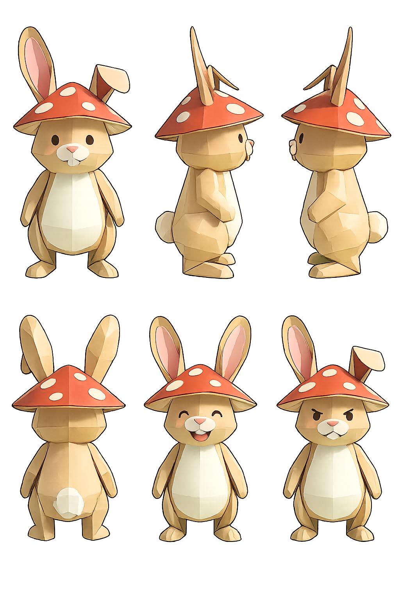
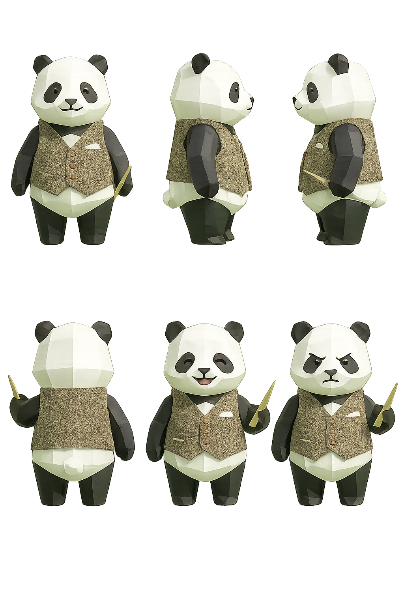
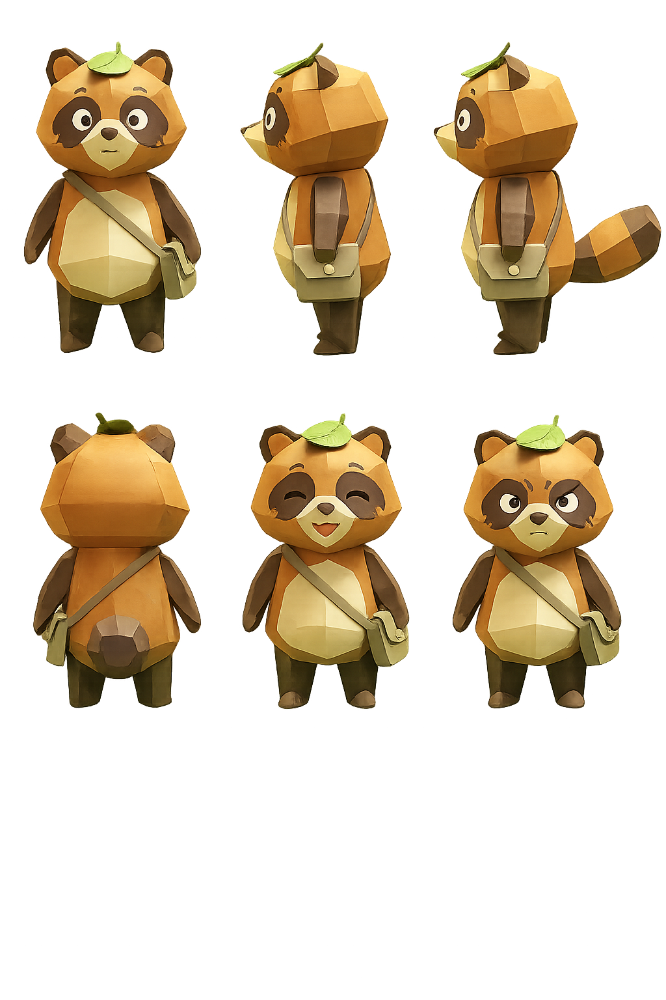

オリジナルキャラクター集
低ポリゴン／ペーパークラフト風の3Dキャラクター3体。各キャラクターは正面・側面・背面の3アングル＋3表情のターンアラウンド資料。
キャラ1: うさぎ（キノコ帽子）
- スタイル: ローポリゴン／ペーパークラフト風
- 種族: うさぎ
- 体色: ベージュ／クリーム色、お腹は白、耳の内側はピンク
- 体型: ぽっこりお腹、長い垂れ耳〜立ち耳
- 装飾: 頭に赤地に白い水玉のキノコ帽子（ベニテングタケ風）
- 表情: 前歯を見せた笑顔／目を閉じたにっこり／むっとした怒り顔

キャラ2: パンダ（ベスト紳士）
- スタイル: ローポリゴン／ペーパークラフト風
- 種族: ジャイアントパンダ
- 体色: 顔と腹が白、耳・目の周り・腕・脚が黒
- 衣装: 茶系のツイードベスト、銅色の3ボタン、胸に白いポケットチーフ
- 持ち物: 金色の細い棒（ハリー・ポッター風の魔法の杖）を片手に
- 表情: 穏やかな微笑み／目を閉じた満面の笑み／きりっとした怒り顔

キャラ3: たぬき（葉っぱ＆ショルダーバッグ）
- スタイル: ローポリゴン／ペーパークラフト風
- 種族: たぬき
- 体色: オレンジ茶色の体、お腹と顔下半分はクリーム色、目周りに茶色のマスク模様、太い縞模様の尻尾
- 装飾: 頭頂部に小さな緑の葉っぱ（化けた状態の象徴）
- 持ち物: ベージュのショルダーバッグ（ボタン付き）を斜め掛け
- 表情: こちらを見上げる無表情／目を閉じたにこやか／きりっとした怒り顔
